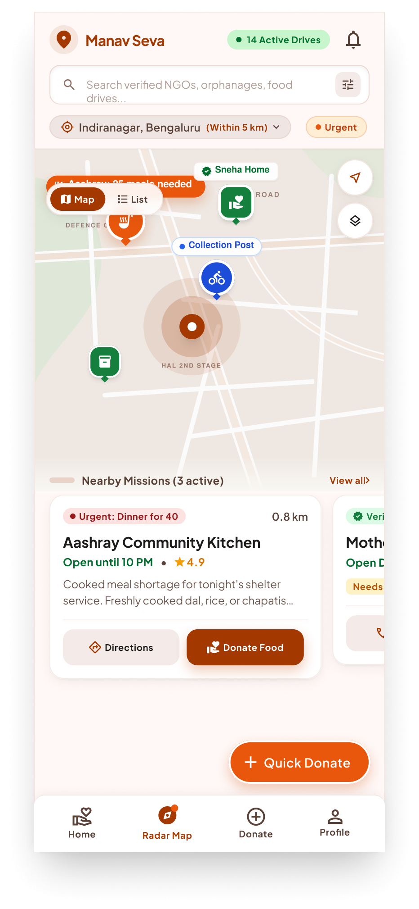
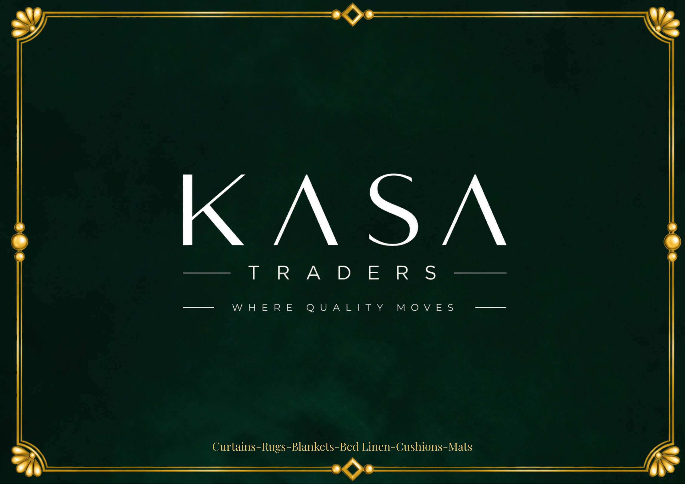

The brief
Start with the person, not the pixel. I look for friction hiding inside a loud problem, then make it easier to move through.
UI/UX DESIGNER · 2026
UI/UX designer crafting human-centred interfaces with clear systems and thoughtful visual detail.
01 / A SMALL MANIFESTO
Start with the person, not the pixel. I look for friction hiding inside a loud problem, then make it easier to move through.
Structure first, feeling second, polish last. My process moves between systems thinking and the small visual detail that makes someone pause.
Mentoring, organising campus communities, and making space for culture to be visible. Design is also how we bring people closer.
02 / THE TOOLKIT
03 / SELECTED WORK
Product thinking, visual systems, and interfaces with purpose.
Healthcare app
UI Designer Intern · Patient onboarding, doctor listings, consultations, chat and health tracking.
View Humanity Founders case study ↗
Donor–NGO mobile platform · 12 screens
Product design · UX strategy · 4 user roles.
View ManavSeva case study ↗Fintech website · 6 pages
UI direction · Brand system · A clearer first step for founders.
View CA Mitra case study ↗AI skin & hair analysis website · 4 pages
Web design · Information architecture · A calmer next step after an AI scan.
View DermaScope case study ↗
Interactive catalogue · 47 pages
Identity · Catalogue design · A digital storefront for home textiles.
View KASA case study ↗
Campaign identity · 50 assets across 10 formats
Design lead · Print · Social · Signage · A consistent delegate experience.
View UPES MUN case study ↗04 / THE PATH SO FAR
Humanity Founders
Career Service Department, UPES
Career Service Department, UPES
UPES MUN Club
Career Service Department, UPES
Udaar Foundation
05 / SAY HELLO